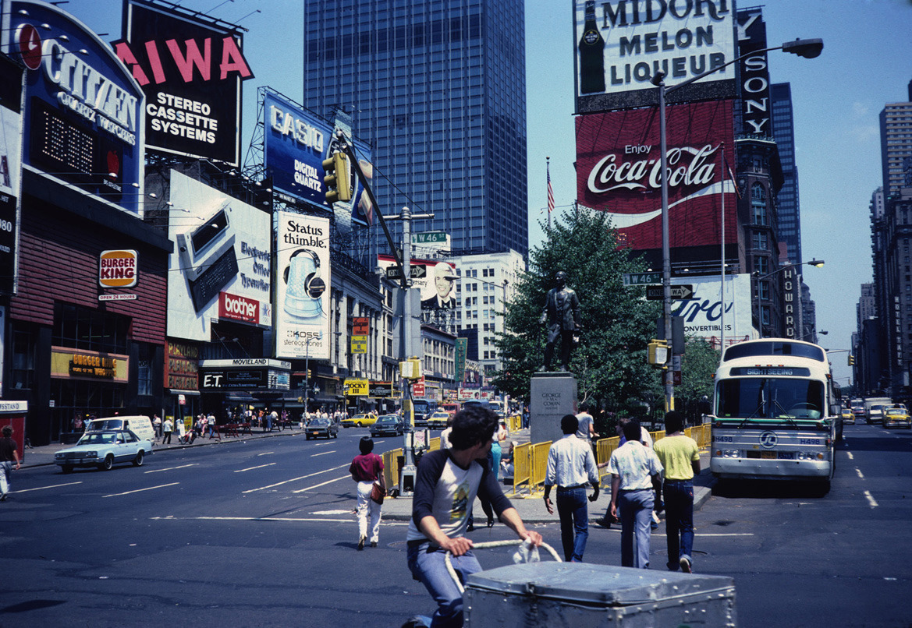
Delivery Man in Times Square (For Gore Vidal), 1982 — George Porcari
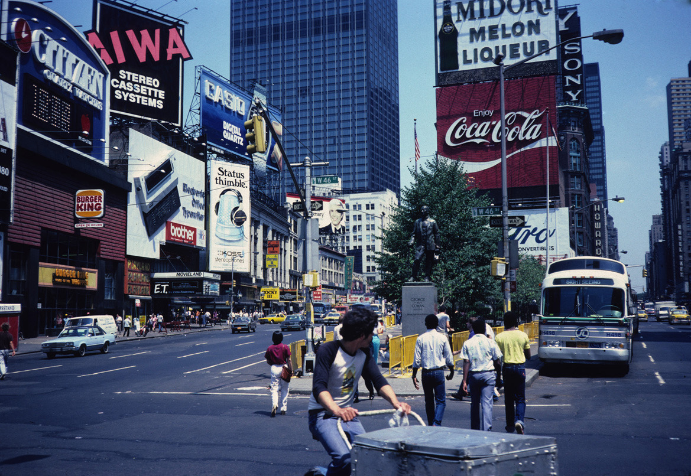
Delivery Man in Times Square (For Gore Vidal), 1982 — George Porcari
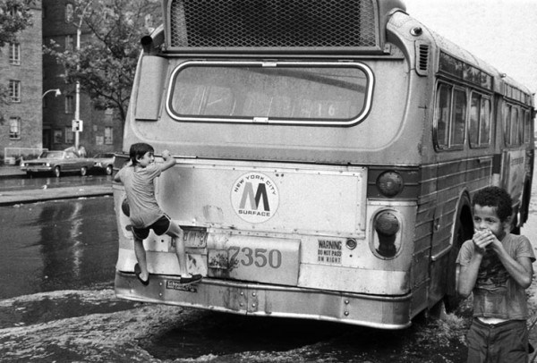
Before PS3s and iPhones, you had to be creative to have fun as a kid.
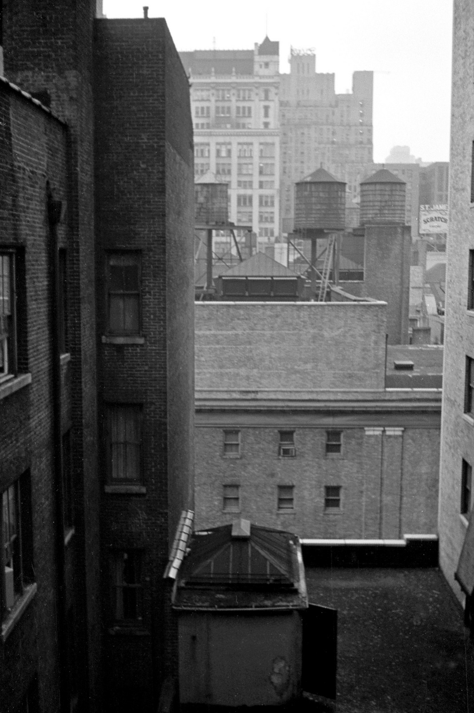
Room with a view. Hotel Edison, 1971.
Weird photo with lots of great graffiti
Broadway and Cortland, 1969
7th Ave at 42nd Street, 1985
Private payphone booths at 42nd and 5th, 1985.
Payphone carnage, 1984
Times Square, 1985
NYC, 1983
Shot by Thomas Hoepker
Worst seat in the house, 1986
Outside Studio 54 in 1978
The state of porn, 1975.
Good parking job.
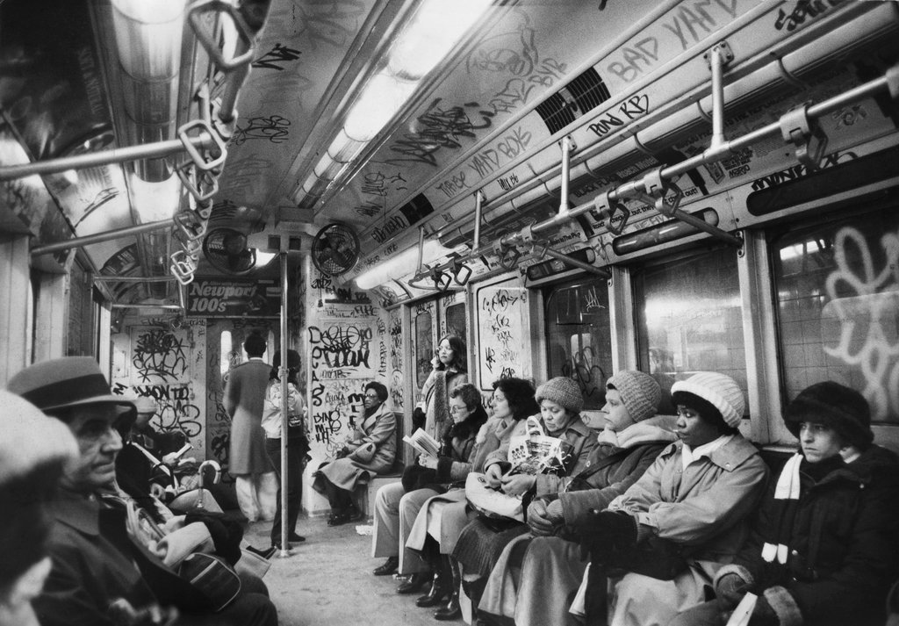
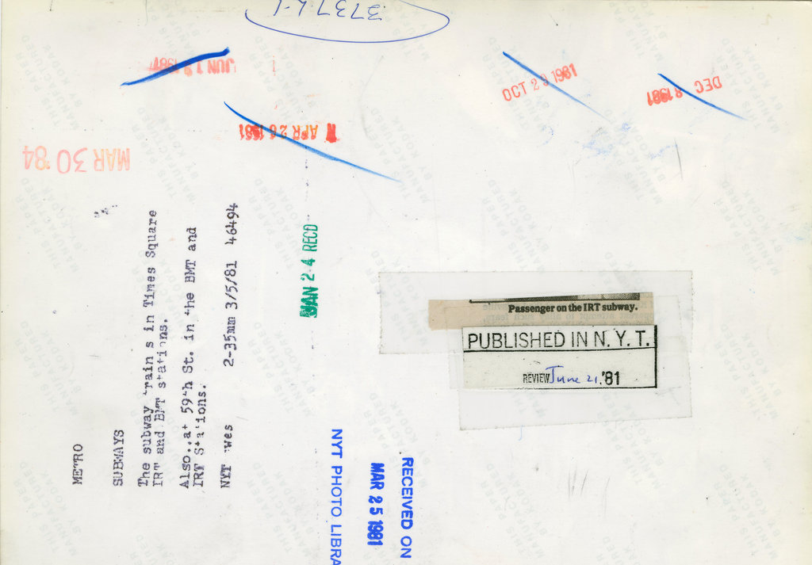
March 5, 1981: Passengers on the New York subway, which was projecting a $369 million deficit that year. A brief story in The Times explained that a tax on oil companies passed by New York lawmakers was intended to narrow that deficit, but that a Federal appeals court effectively abolished the tax, “which had been counted on to produce more than $235 million a year, most of it earmarked for the cash-starved Metropolitan Transportation Authority.” Photo: The New York Times
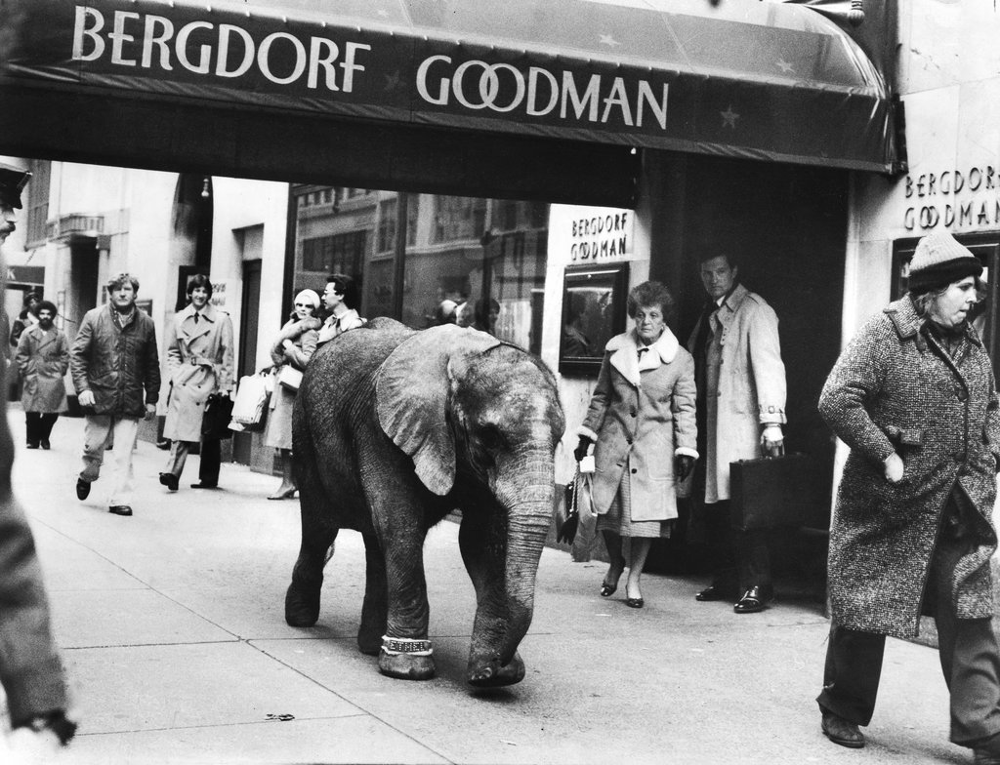
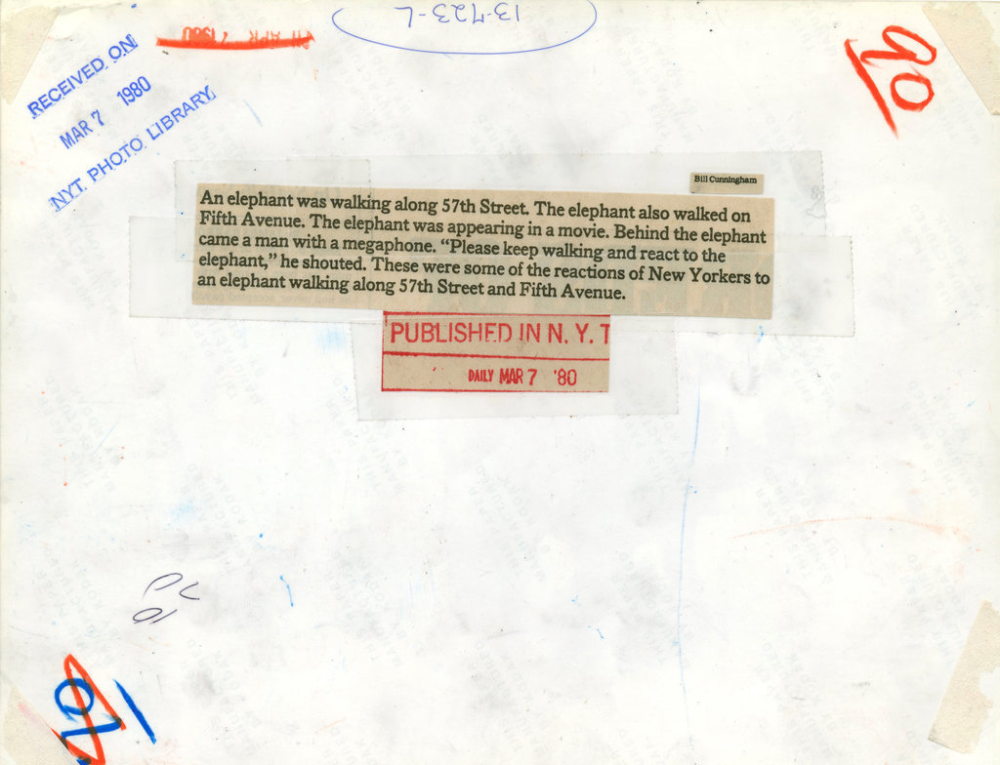
March 7, 1980: New York passers-by, hurried rulers of the sidewalks, had to be instructed to notice the elephant in their midst. “Please keep walking and react to the elephant,” the film director pleaded. Photo: Bill Cunningham
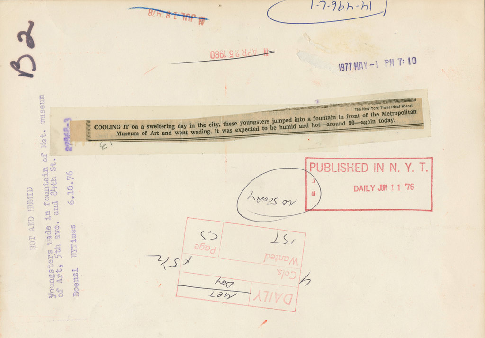
June 10, 1976: An unseasonably hot day in mid-June called for splashing in the fountains outside the Metropolitan Museum of Art. Photo: Neal Boenzi/The New York Times
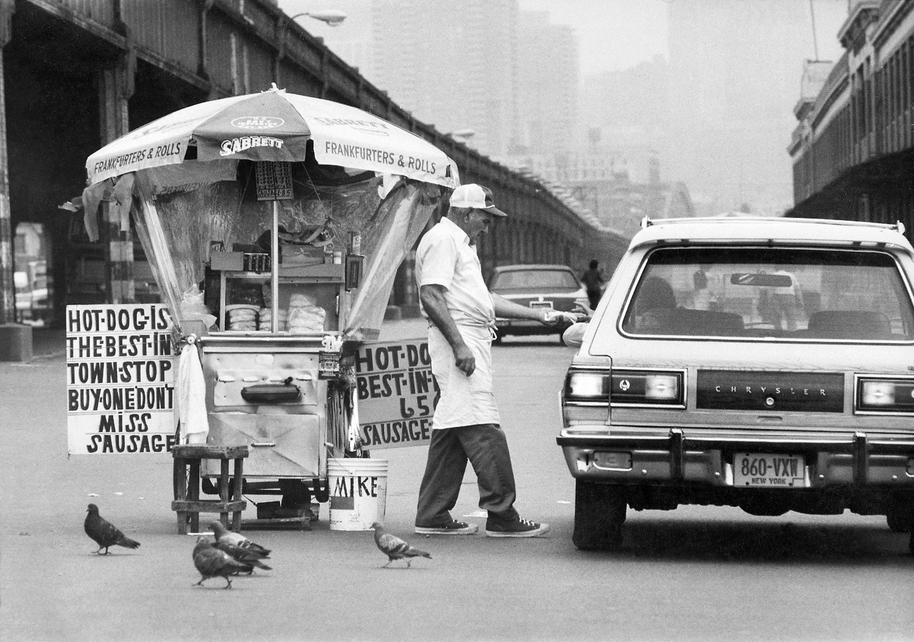
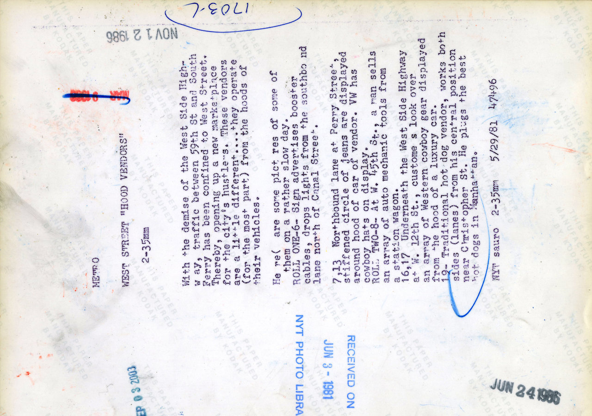
May 29, 1981: Miraculously, the best hot dogs in Manhattan could be found underneath the West Side Highway, where “tailgate vendors” peddled their wares, profiting from the closing of the elevated highway, which diverted traffic to where sellers of things could flag down motorists. “Entrepreneurs, working from cars along West Street, had varied items for sale, ranging from car booster cables,” The Times reported, “to cowboy hats,” which, presumably, could be enjoyed with a superlative frankfurter. Photo: William E. Sauro/The New York Times
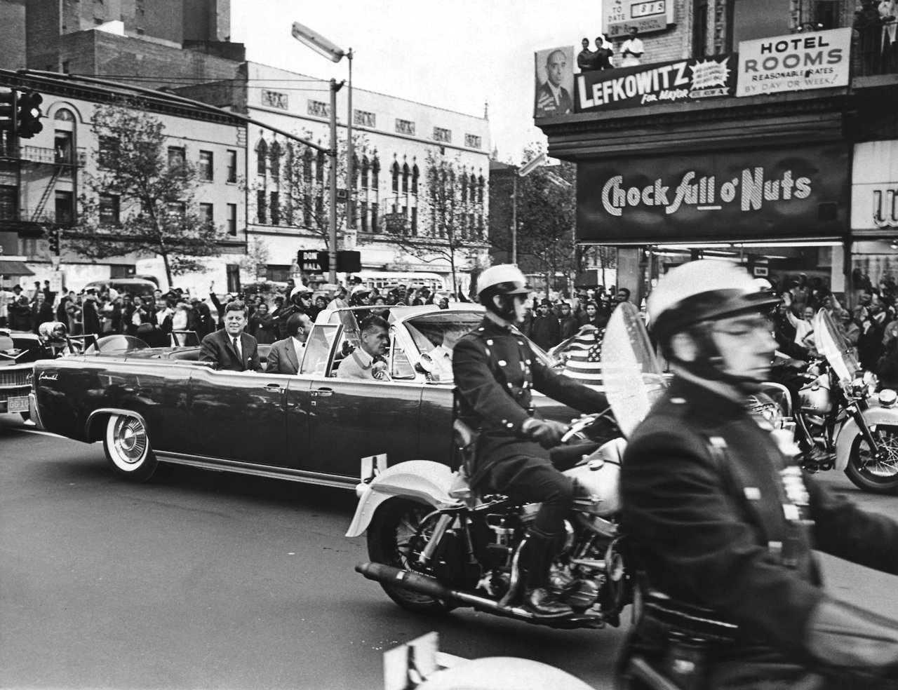
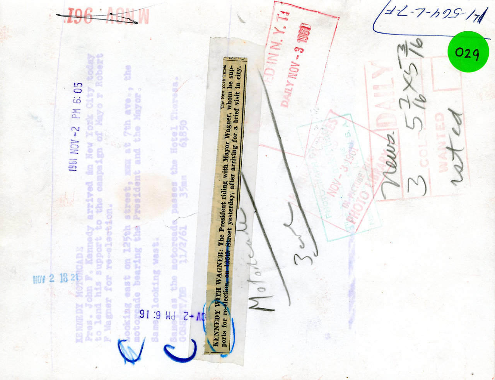
Nov. 2, 1961: President John F. Kennedy in a motorcade on 45th Street, rallying New Yorkers to reelect the incumbent, Robert F. Wagner, to a third term. Though the procession drew cheers, according to The Times, Mayor Wagner’s Republican opponent, Attorney General Louis J. Lefkowitz, was not impressed: “Not even President Kennedy’s effusive praise can reverse the tide that is flowing against the Mayor under whose administration New York has become the worst governed city in America,” Mr. Lefkowitz said. Mayor Wagner went on to win that third term, beating Mr. Lefkowitz by nearly 400,000 votes. Photo: Carl T. Gossett/The New York Times
Weird post-apocalyptic view of the WTC, 1970s
East 7th between Ave B and C, 1980
Metropole Go-Go, 1970s
Times Square, 1975
Rooftops and water towers, 1979

His prices were insane.
Bleecker Street, 1979
Chillin’ on the Deuce, 1975
Mmmm, John’s Pizza, 1976